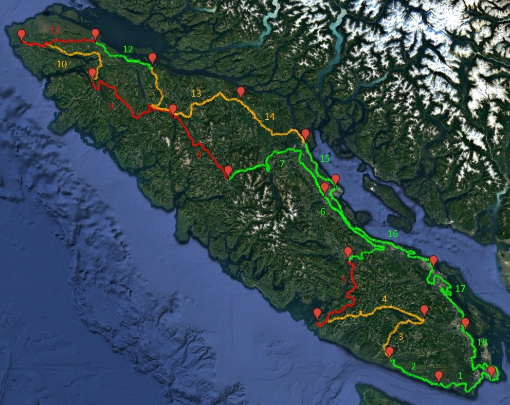

1,700 km circumnavigating Vancouver Island. Click the map to view full size.
| # | Route | Surface |
|---|---|---|
| 01 | Victoria → Shirley | Paved |
| 02 | Shirley → Port Renfrew | Paved |
| 03 | Port Renfrew → Lake Cowichan | Dirt |
| 04 | Lake Cowichan → Bamfield | Mixed |
| 05 | Bamfield → Port Alberni | Dirt |
| 06 | Port Alberni → Courtenay | Paved |
| 07 | Courtenay → Gold River | Paved |
| 08 | Gold River → Woss | Dirt |
| 09 | Woss → Port Alice | Dirt |
| 10 | Port Alice → San Josef Bay | Dirt |
| 11 | San Josef Bay → Port Hardy | Dirt |
| 12 | Port Hardy → Telegraph Cove | Paved |
| 13 | Telegraph Cove → Sayward | Dirt |
| 14 | Sayward → Campbell River | Mixed |
| 15 | Campbell River → Courtenay | Paved |
| 16 | Courtenay → Nanaimo | Paved |
| 17 | Nanaimo → Cowichan Bay | Paved |
| 18 | Cowichan Bay → Victoria | Paved |
VIGL maps and stage descriptions are intended as an overview of the route rather than turn-by-turn instructions. In addition to Google Maps, it's recommended to have an accurate GPS, a copy of the Backroads Mapbook, a personal locator beacon and to know how to use them. Conditions on Vancouver Island can shift from sun to downpour in as little as 10 minutes and may render parts of the route impassable. Please take care and be ready to turn back if the situation becomes unsafe.
If you've enjoyed the route, consider donating to help maintain the Vancouver Island Grand Loop.
Donate via PayPalHave feedback on road conditions or want to report a closure? Contact me.
{kind=link}